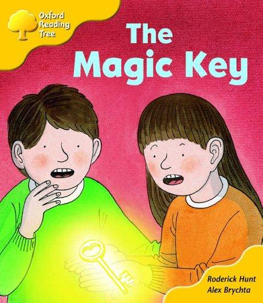

AR 0.3~2.8일상
Oxford Reading Tree (1~9단계)
영국 초등학교에서 읽기 교재로 널리 쓰는 시리즈입니다. 키퍼, 비프, 칩 삼 남매와 강아지 플로피의 일상에서 시작하고, 5단계부터는 마법 열쇠를 따라 모험을 떠납니다. 단계가 촘촘하게 나뉘어 있어서 한 단계씩 올라가는 재미가 있습니다.
- 지은이
- Roderick Hunt, 그림 Alex Brychta
- 펴낸 곳
- Oxford University Press
- 한 권
- 8~32쪽
- 표지의 책
- The Magic Key (5단계)
이런 아이에게영어책을 처음 읽기 시작하는 아이에게 권합니다. 짧은 책을 여러 권 읽으며 읽기에 자신감을 붙이고 싶을 때 좋습니다.